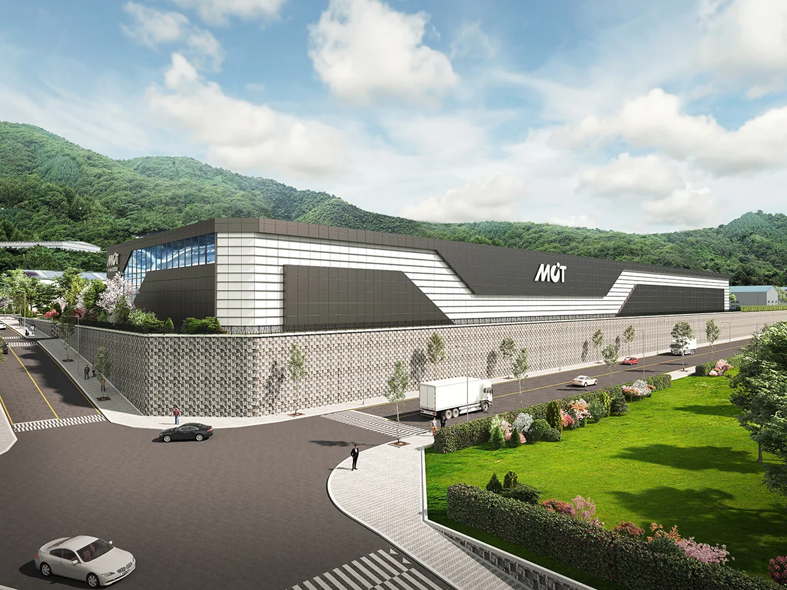
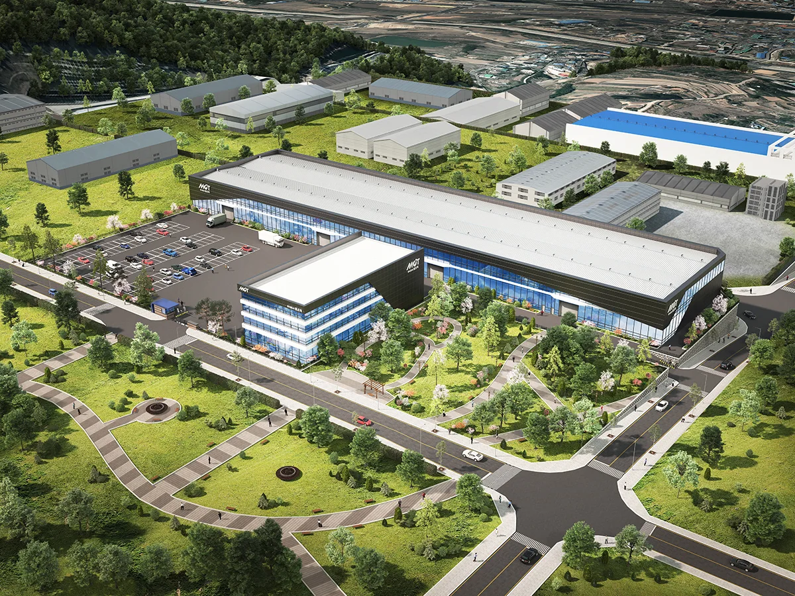
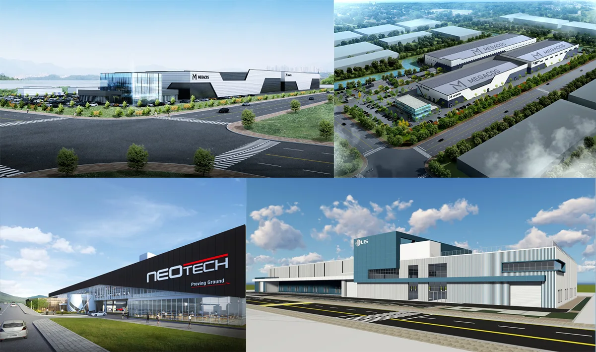
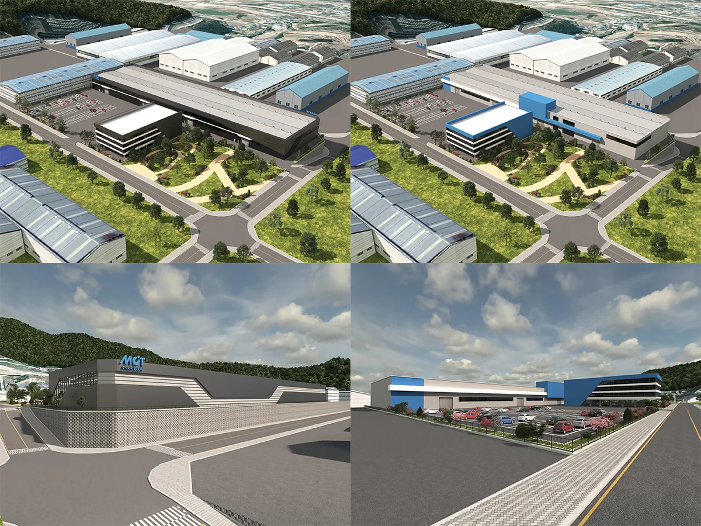
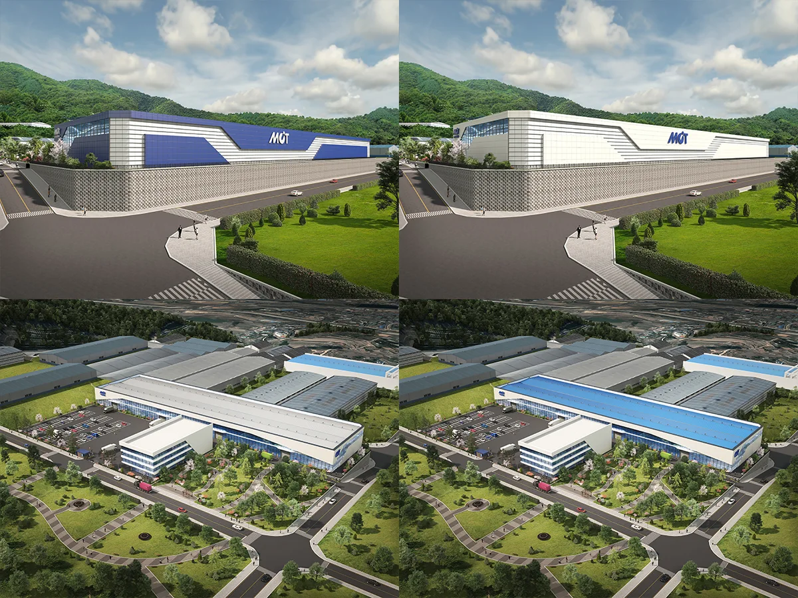

제 2공장 신설을 위한 투시도 및 조감도 제작 납품 결과물입니다.


본 프로젝트는 투시도 , 조감도 제작과 동시에 외부 디자인 샘플도 2가지 타입 정도를 제안 드리고 그 중 마음에 드시는 결과물로 CGI 작업이 이루어진 프로젝트입니다.
작업에 착수하기 전, 대략적인 참고 이미지들을 보내주시면서 이런 형태의 공장으로 만들고 싶다며 참고할만한 이미지들을 보내주셨습니다.

보내주신 레퍼런스 이미지를 참고하여 실제 측량 자료와 설계 자료를 바탕으로 현황에 맞도록 외부를 리디자인 한 중간 과정 결과물입니다.

작업이 진행되며 마음에 드시는 디자인 결과물에 다양한 색상을 제안드린 결과물입니다.

실제로 몇몇 참조 이미지만으로도 충분히 좋은 디자인으로 투시도 조감도 제작 가능합니다.
감사합니다.